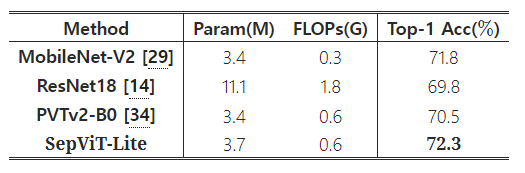

SepViT: Separable Vison Transformer
Contents
SepViT: Separable Vison Transformer#
Citation#
Li W, Wang X, Xia X, et al. Sepvit: Separable vision transformer[J]. arXiv preprint arXiv:2203.15380, 2022
Abstract#
ViT: 자원 제약이 있는 디바이스에 부담스러운 높은 계산량
이를 다루기 위해 depthwise separable convolution으로부터 영감을 받아 SepViT를 설계
window 내, window 간 정보 상호작용 가능
novel window token embedding / grouped self-attention
아주 적은 계산 비용으로 window 간 attention 관계를 모델링
여러 window의 장거리 시각적 의존성을 각각 포착
정확성과 지연 시간 사이의 trade-off 면에서 SOTA 달성하는 등 여러 downstream task에서 높은 성능 달성
Introduction#
image recognition을 위한 ViT는 장거리 의존성을 모델링하는데엔 좋지만, 계산복잡성이 매우 높음
Swin - window-based self-attention
non-overlapping sub-windows에서의 self-attention 계산을 제한
복잡성을 줄여주기는 하지만, window 간의 building connection을 위한 shifted operator는 ONNX나 TensorRT 개발에 적합하지 않음
Twins - window-based self-attention + PVT + separable self-attention
배치 친화적이고 성능이 뛰어나지만 계산 효율이 좋지 않음
CSWin - cross-shaped window self-attention
성능은 높지만 throughput이 낮음 → 오래 걸림
위와 같은 문제를 보완하기 위해 Separable Vision Transformer(SepViT)를 설계하여 입력 데이터 지역적 전역적 의존성을 모두 포착
MobileNet의 depthwise separable convolution 구조를 차용하여 depthwise separable self-attention 구조를 설계
General Convolution
General Convolution
Complexity of General Convolution
depthwise separable convolution
Depthwise Separable Convolution
Depthwise Separable Convolution & Complexity
Comparison Standard vs. Depthwise
Xception
Xception Architecture
MobileNet
Comparision of Depthwise Separable and Full Convolution MobileNet
Depthwise Sep. Conv. reduces computation time, parameters
Dpethwise Sep. Conv. = Depthwise Conv + Pointwise Conv
Used in recent architectures(MultiModel Nets, Xception, MobileNets)
각 window 내부의 지역적 특징을 잡아내면서 window 간의 연결을 만들고 표현적 능력을 향상시킴
지역적 특성을 가진 window의 전역적 표현력을 얻기 위해 window token embedding을 적용
window 간 attention 관계를 매우 적은 비용으로 모델링
AlexNet의 grouped convolution을 차용한 grouped self-attention 구조를 설계
Grouped Convolution
Comparision of Standard Convolution and Grouped Convolution
채널을 여러 group으로 나누어 독립적으로 convolution 연산을 수행
group 수에 따라 파라미터 수를 줄일 수 있고, 병렬 처리가 가능
직접 group 수를 정해야 하며, group 수가 너무 많으면 오히려 성능이 하락할 수 있음
ImageNet-1K 분류. ADE20K 의미론적 분할, COCO 객체 탐지 및 객체 영역 분할 실험 수행하여 성능과 지연시간 간의 trade-off를 개선
Comparison of throughput and latency on ImageNet-1K classification
Separable Vision Transformer
단일 transformer block에서 window 간 지역적 정보 소통과 전역적 정보 교환이 가능
Window token embedding
각 window의 전역적 특징 표현을 학습
매우 적은 계산 비용
Grouped self-attention
다중 window 간 문맥적 개념을 포착하고 성능 개선
Methodology: SepViT#
1. Overview#

Separable Vision Transformer (SepViT)
hierarchical architecture + window-based self-attention + conditional position encoding
overlapping patch merging layer → feature map downsampling
공간적 해상도는 4 or 2 stride로 1/32까지 점진적으로 감소
채널 차원 두 배씩 증가
depthwise self-attention(DWA): local information communication
pointwise self-attention(PWA): global information exchange
2. Depthwise Separable Self-Attention#
Depthwise Self-Attention (DWA)
Separable Vision Transformer (SepViT) - Depthwise self-attention
input feature map에 window partition 형성
feature map의 channel 역할을 하며 다양한 정보를 포함
각 window마다 window token을 생성
global representation
이후에 나오는 pointwise self-attention에서 각 attention 간 관계를 모델링
\[ \text{DWA}(z)=\text{Attention}(z\cdot W_{Q},z\cdot W_{K},z\cdot W_{V})\; \]\(z\) : feature token(pixcel and window tokens)
\(W_Q, W_K, W_V\) : regular self-attention computation
\(Attention\) : a standard self-attention for local windows
Window Token Embedding
window token: single token을 이용해 sub-window에 대한 핵심 정보를 encapsulate
window token은 0 또는 학습 가능한 벡터로 구성
DWA를 통과하면서 정보 상호작용이 일어나 각 window에 대한 전역적 표현을 학습
pixel별로 token을 구성하는 것보다 훨씬 비용이 적게 듦
Pointwise Self-Attention (PWA)
Separable Vision Transformer (SepViT) - Poinwise self-attention
pointwise convolution은 서로 다른 채널 간 정보를 융합
이를 차용해 window 간 정보를 융합하고 input feature map의 최종적인 표현을 획득할 수 있는 PWA 설계
window token으로부터 window 간 attention relationship을 획득하고 LN(LayerNormalization)과 Gelu activation을 통해 attention map 형성
\[ \text{PWA}(z,wt)=\text{Attention}(\text{Gelu}(\text{LN}(wt))\cdot W_{Q},\text{% Gelu}(\text{LN}(wt))\cdot W_{K},z)\; \]\(wt\)는 window token을, \(Attention\)은 window \(z\)에 적용되는 standard self-attention
Complexity Analysis
multi-head self-attention(MSA)
\(4HWC^2 + 2H^2W^2C\)
Swin(window based self-attention)
\(4HWC^2 + 2M^2HWC\) (\(M * M\) window size)
DWA
\(\varOmega(\text{DWA})=3HWC^{2}+3NC^{2}+2N(M^{2}+1)^{2}C\;\)
\(N\) : number of windows
\(3NC^{2}\) : Linear layers에 window token을 encoding 하는 complexity
\(2N(M^{2}+1)^{2}C\) : N개 window에서 발생하는 self-attention 행렬곱 complexity
\(M^{2}+1\) : pixel token + window token
\(N\)은 \(H\) 또는 \(W\)보다 훨씬 작기 때문에 계산량이 적음
PWA
\(\varOmega(\text{PWA})=HWC^{2}+2NC^{2}+N^{2}C+NHWC\;\)
window token이 지역적 window의 전역적 정보를 요약하므로 pixel level 보다는 window level에서 window 간 정보 교환이 PWA를 통해 효율적으로 발생
\(2NC^{2}\) : \(N\) window와 query, key 연산
\(N^2C\) : attention map 생성 연산량
\(NHWC\) : attention map과 feature map 간의 행렬곱 연산
3. Grouped Self-Attention#
depthwise separable self-attention과 group self-attention의 차이
window를 group으로 나눠주고 sub-window를 만들어 depthwise self-attention
window들의 장거리 시각적 의존성을 포착(적어도 group 내에서)
약간의 비용이 상승하나 성능을 높일 수 있었음
window token이 group self-attention layer에서 어떻게 이루어지는지 언급되지는 않음
4. SepViT Block#
\(\ddot{z}^{l}\) : Depthwise Self-Attention
\(\hat{z}^{l}\) : Pointwise Self-Attention
\(z^{l}\) : SepViT block \(l\)
\(\dot{z}^{l}\) : feature maps
\(\dot{wt}\) : learned window tokens
Comparison of Complexity
Complexity comparison of an information interaction within and among windows in a single SepViT block with those two-block pattern works in each stage
window 내, window 간 정보 상호작용은 SepViT에서 하나의 block에서 일어나는데 반해, Swin과 Twins는 두개의 연속적인 block이 필요
거의 절반 수준의 MACs(메모리 접근 비용(시간))
이는 SepViT가 좀 더 경량화 되었으며, 불필요한 layer를 제거했다는 의미
5. Architecture Configuration#
Detailed configurations of SepViT variants in different stages
window size : 7 * 7 / 14 * 14
Experimental Results#
1. ImageNet-1K Classification#
Settings
ImgaeNet-1K
1.28M train / 50K validation / 1K categories
Setting
Epochs
Batch size
GPU
Resolution
Optimizer
Weight decay
Warm-up
Depth aug.
SepViT-B
300
1024
V100 * 8
224*224
AdamW
0.1
20
0.2
SepViT-S
300
1024
V100 * 8
224*224
AdamW
0.05
5
0.3
SepViT-T
300
1024
V100 * 8
224*224
AdamW
0.05
5
0.5
Results
Comparison of different state-of-the-art methods on ImageNet-1K classification
RegNet : 2020년 Facebook AI Research
Degine space에서 quantized linear function을 통해 최적의 width와 height를 얻어냄
EfficientNet보다 5배 빠르며 일반화 성능이 높음
적은 FLOPs로 효율이 좋음
2. ADE20K Semantic Segmentation#
Settings
ADE20K
20K train / 2K validation / 150 categories
Semantic FPN backbone
batch size
pre-train
fine-tuning
learning rate
Resolution
Optimizer
Weight decay
Depth aug.
SepViT-B
16
ImgaeNet-1K
ADE20K
0.0001
512*512
AdamW
0.0001
0.2
SepViT-S
16
ImgaeNet-1K
ADE20K
0.0001
512*512
AdamW
0.0001
0.3
SepViT-T
16
ImgaeNet-1K
ADE20K
0.0001
512*512
AdamW
0.0001
0.4
UperNet backbone
batch size
pre-train
fine-tuning
learning rate
Resolution
Optimizer
Weight decay
Depth aug.
SepViT-B
16
ImgaeNet-1K
ADE20K
0.00001
512*512
AdamW
0.01
0.3
SepViT-S
16
ImgaeNet-1K
ADE20K
0.00001
512*512
AdamW
0.01
0.3
SepViT-T
16
ImgaeNet-1K
ADE20K
0.00001
512*512
AdamW
0.03
0.5
Results
Comparison of different backbones on ADE20K semantic segmentation task
3. COCO Object Detection and Instance Segmentation#
image size : 800 * 1280
12 epochs (1 x) / 36 epochs (3 x) + Multi-scale
Multi-scale : scale specific context-regions(chips)를 생성하고 proposal 분류
Fast R-CNN보다 연산량을 줄이고 속도를 개선
Settings
RetinaNet / Mask R-CNN backbone
batch size
pre-train
fine-tuning
learning rate
Optimizer
Weight decay
Depth aug.
SepViT-S
16
ImgaeNet-1K
COCO
0.00001
AdamW
0.001
0.2
SepViT-T
16
ImgaeNet-1K
COCO
0.00001
AdamW
0.0001
Results
Comparison of different backbones on RetinaNet-based object detection task
Comparison of different backbones on Mask R-CNN-based object detection and instance segmentation tasks
Ablation Study
Ablation studies of the key components in our SepViT
Efficient Components
SepViT-T\(\dagger\) : with CPE but without OPE
Window Token Embedding
LWT : Learnable Window Token Embedding(not fixed zero vector)
global representation을 직접적으로 얻는 average pooling과 depthwise convolution을 window token embedding을 대체해 사용
계산 비용이 거의 차이가 없음에도 불구하고 성능 차이가 존재
Comparison of different approaches of getting the global representation of each window in SepViT
Comparison with Lite Models

Comparison of lite models on ImageNet-1K classification
비슷한 model size에도 불구하고 성능 차이가 존재
Conclusion#
depthwise separable self-attention은 single block에서 window 내, window 간 정보 상호작용을 하게 함
window token embedding은 매우 적은 계산 비용으로 window 간 attention relationship을 모델링하도록 해줌
grouped self-attention은 더 나은 성능으로 여러 window에 걸친 장거리 시각적 의존성을 잡아낼 수 있게 해줌
따라서 performance와 latency 간의 trade-off를 개선
Author by 정영상
Edit by 김주영